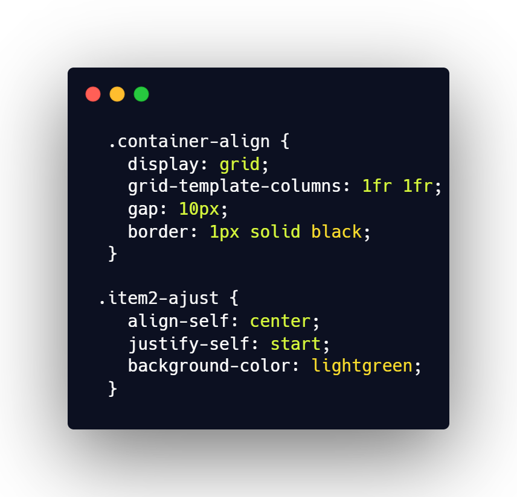

Ajustement de la position d’un item
Utilisations des propriétées Align-self et justify-self
Exemple d'alignement d'un item au début de la colonne horizontalement
Item 1
Item Spécial

Précédent
Suivant